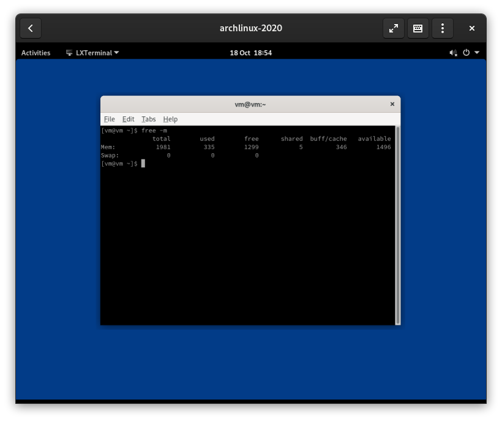

<html>
    <title>Alan's blog</title>
    <link rel="stylesheet" href="style.css">
    <meta name="viewport" content="width=device-width, initial-scale=1.0"> 
    <meta charset="UTF-8">
</html>
<h1 id="Gnome%20is%20bloated">Gnome is bloated</h1>

<blockquote>
<p>Gnome on Arch by default is really bloated, it doesn&#39;t need to be this way.</p>
</blockquote>

<p>By default, the gnome <a href="https://www.archlinux.org/groups/x86_64/gnome/">group</a> is really bloated, it contains packages that you do not need such as <a href="https://www.archlinux.org/packages/extra/x86_64/yelp/">yelp</a>. I think that packages like these should not be in the Gnome group but rather in <a href="https://www.archlinux.org/groups/x86_64/gnome-extra/">gnome-extra</a> as they are not needed to run Gnome. </p>

<p>I made my own list of packages that you actually need to run Gnome and alternatives to packages that need a lot of dependencies for example Nautilus which has GVFS as a strong dependency even though I doubt most people will be using it and it takes up lots of resources. </p>

<p>Instead of intalling Gnome normally like <code>pacman -S gnome</code>, I would reccomend installing Gnome with these packages so you do not install as much bloat.  </p>

<p><code>pacman -S gdm gnome-control-center gnome-keyring lxterminal gpicview-gtk3 gnome-session gnome-settings-daemon gnome-shell pcmanfm-gtk3 mutter</code></p>

<p>After installing Gnome with these options, you will have a much lighter Gnome install, like shown in this image.</p>

<p></p>
<html>
    <p>Generated using <a href="https://www.romanzolotarev.com/ssg.html">SSG</a></p>
</html>
